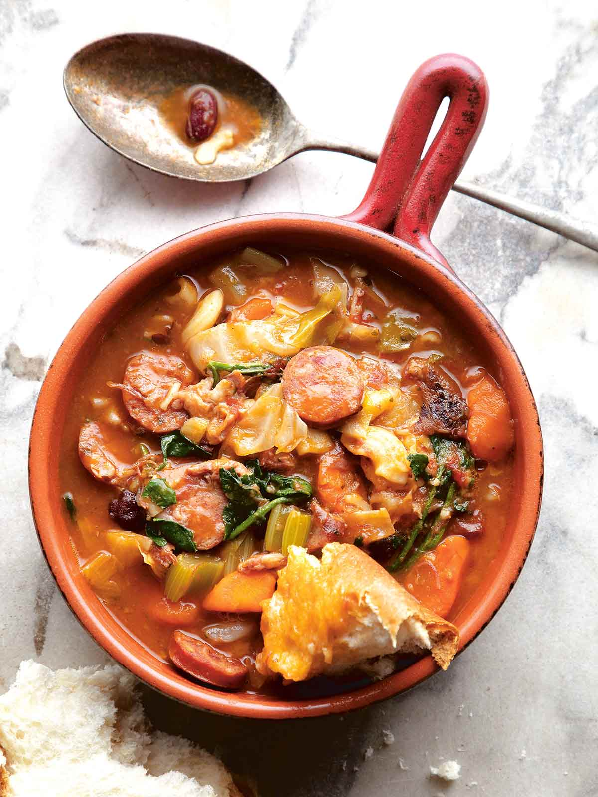
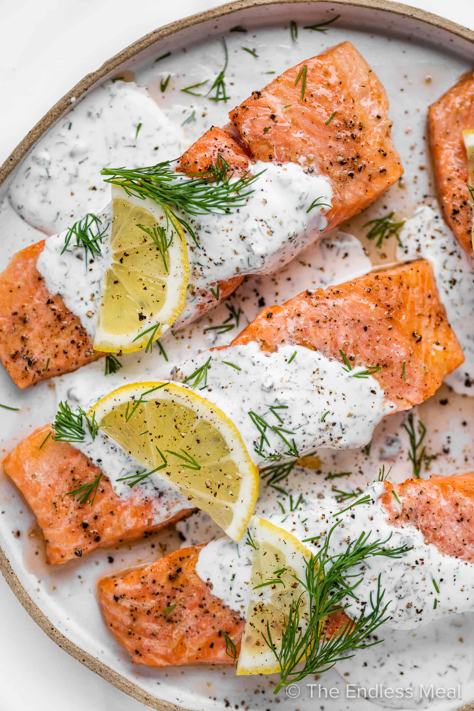
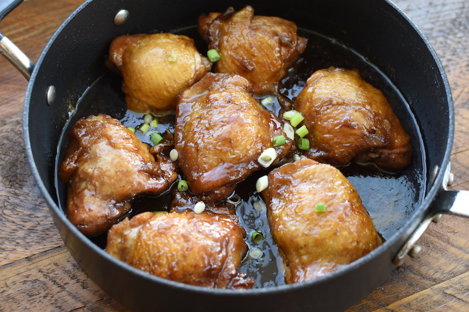

Pork Hash / Shumai
- 1⁄2 pound ground pork
- 1⁄2 pound minced shrimp
- 1 egg
- 1⁄4 cup chopped water chestnuts
- 1⁄4 green onion
- 2 Tbsp Aloha shoyu
- 1 Tbsp oyster sauce
- 1⁄4 tsp salt
- 1⁄4 tsp ground black pepper
- 1 Tbsp sesame oil
- 1 (14oz.) pkg round dumpling skins
Fill dumpling skins half-way and steam.
Portuguese Bean Soup
Serving size: 8-10- Leftover ham bones (optional but really adds flavor)
- 2 pounds smoked ham shanks
- 4-5 (14.5oz.) chicken broth
- 1-2 pkgs Sazona Goya seasoning (Con Culantro Y Achiote)
- 2 (15oz.) red kidney beans
- 2 (14.5oz.) original stewed tomatoes
- 3 cloves garlic, crushed
- 1 medium/large yellow onion, chopped
- 1⁄2 tsp salt and 1 tsp black pepper (adjust taste accordingly as soup simmers)
- 1-2 bay leaves
- 1 large Portuguese Sausage (12-16oz.)
- 3 large potatoes, cubed into 1-inch pieces
- 3 large carrots (NOT mini or baby carrots), cut into 1" pieces
- 4 stalks of celery
- 1 small/medium head of green cabbage
In large pot cover ham bones/shanks with the chicken broth enough to cover meat plus an extra cup and a half. Add the garlic, onion, salt, pepper, stewed tomatoes and bay leaves, and bring to a boil. Then, turn down to a simmer and cook covered until meat is tender (11⁄2 - 2 hrs). Skim off fat/oils halfway during cooking period and taste test. Then, add the sausage, potatoes, and carrots and cook until tender. Once tender, add the chopped green cabbage and finish cooking for 5 mins (or until cabbage is soft).
Optional: May add some cooked macaroni to the soup when done - many locals like to eat it this way too.
Tofu Salad
Serving size: 10- 1 block firm tofu (20oz.), cubed and lay on paper towels
- 1⁄2 sweet onion like Vidalia or similar, thinly sliced
- 1 can red salmon preferred (7.5oz.) or 1 can tuna (6oz.)
- 1 pkg bean sprouts (10oz.)
- 1 pkg watercress, cut into 1-1/2 inch pieces; if none, substitute with other greens
- 1 to 2 large tomatoes, cubed
Layer all the above in order listed in large salad bowl or platter, starting with tofu on the bottom. Place in refrigerator until ready to serve.
- Dressing:
- 1⁄4 tsp salt
- 1⁄4 tsp ground black pepper
- 1 Tbsp sesame oil
- 1 (14oz.) pkg round dumpling skins
Heat oil, sesame, and garlic in a small pot until garlic is lightly browned. Remove from heat and cool the mixture. Add soy sauce to cooled oils. Pour over salad just before serving.
Salmon Teriyaki
Serving size: 3-4- 1 pound salmon steaks or fillets
- 2 Tbsp oil for frying
- Marinade:
- 2 Tbsp Kikkoman shoyu
- 1 Tbsp mirin
- 1 tsp sugar
- 1 tsp sake or sherry wine if replacing sake
Cut salmon into serving portions and place in a bowl. Mix marinade ingredients in a small bowl and stir well to dissolve sugar. Pour over salmon pieces. Marinate for 20-25 minutes (save marinade).
Fry salmon in heated oil in skillet pan and cook until light brown. Gently turn salmon pieces over; cook for another 2 minutes, or until cooked through. Reduce heat to low and add marinade and cook for another minute or two until sauce reduces.

Dill Baked Salmon
- 8 boneless salmon fillets
- 1 cup mayonnaise
- 1 lemon
- 3 garlic cloves, minced
- 1 Tbsp capers
- 2 tsp dried dill
- Salt
- Pepper
Cover sheet pan with foil and preheat oven to 375 degrees farenheit. In a bowl, add mayonnaise, garlic, capers, and dill. Then, add the zest of a whole lemon and juice of half the lemon, mix well. Place salmon on sheet pan and season with salt and pepper. Evenly spread salmon filets with dill sauce and bake for 15 minutes. Raise rack and broil for a few minutes, just enough for it to brown.
Shoyu Chicken
- 1 Tbsp oil
- 8-10 boneless skinless chicken thighs
- 1 cup shoyu
- 1 cup sugar
- 2 1" ginger slices
- 3 garlic cloves, smashed
In pot on medium/medium high heat add oil until heated through. Add garlic, ginger, and stir until fragrant (about 20 secs). Add shoyu, sugar and stir until sugar is dissolved. Add chicken, making sure it's mostly covered by liquid and bring to boil. Cover and turn down heat to simmer. Simmer for 20-30 minutes, stirring occasionally to make sure all chicken is covered in sauce, or until chicken is cooked through.
